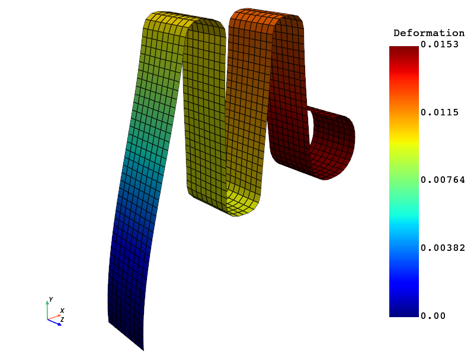

Note
Go to the end to download the full example code.
3D field ROM example with FEA mesh based visualization#
This example shows how PyTwin can be used to load and evaluate a twin model, and visualize the ROM results on a FEA mesh. Once the twin model is evaluated, PyDPF is used to read in the FEA mesh on which the ROM results will be projected. PyVista is then used to perform the 3D visualization with different options. For more information, see the PyDPF documentation and PyVista documentation.
{kind=link}
# sphinx_gallery_thumbnail_path = '_static/TBROM_FEA_mesh_projection.png'
Note
This example uses PyDPF which requires a DPF server installation (version 2024 R1-pre0 or higher) as a first step. More information on how to download and install DPF server is available here : https://dpf.docs.pyansys.com/version/stable/getting_started/index.html#install-dpf-server
To be able to use the functionalities to project an output field on a mesh, you must have a twin with one or more TBROMs. The output mode coefficients for the TBROMs must be enabled when exporting the TBROMs and connected to twin outputs following these conventions:
If there are multiple TBROMs in the twin, the format for the name of the twin output must be
outField_mode_{mode_index}_{tbrom_name}.If there is a single TBROM in the twin, the format for the name of the twin output must be
outField_mode_{mode_index}.

Note
To be able to use the functionalities to project an output field on a mesh with interpolation, you need to have a Twin with 1 or more TBROM, for which its geometry is embedded when exporting the TBROMs to Twin Builder

Perform required imports#
Perform required imports, which include downloading and importing the input files.
Define ROM inputs#
Define the ROM inputs.
rom_inputs = {"Force_X_Component": 101.471}
Load the twin runtime and generate displacement results#
Load the twin runtime, initialize and extract ROM related information.
print("Initializing the Twin")
twin_model = TwinModel(twin_file)
twin_model.initialize_evaluation(inputs=rom_inputs)
rom_name = twin_model.tbrom_names[0]
output_name = twin_model.get_field_output_name(rom_name)
named_selections = twin_model.get_named_selections(rom_name)
Initializing the Twin
Extract the FEA mesh information for projection#
Load the Mechanical rst file through PyDPF and extract the mesh
print("Reading the FEA mesh")
ds = dpf.DataSources()
ds.set_result_file_path(fea_file)
streams = dpf.operators.metadata.streams_provider(data_sources=ds)
# extracting the grid associated to the fea model
whole_mesh = dpf.operators.mesh.mesh_provider(streams_container=streams).eval()
target_mesh = whole_mesh.grid
Reading the FEA mesh
Project the TBROM field onto the targeted mesh#
The projection is performed without interpolation (i.e. direct mapping of data)
print("Projecting the results on target mesh")
rom_on_fea_mesh = twin_model.project_tbrom_on_mesh(rom_name, target_mesh, False)
Projecting the results on target mesh
Deform the target mesh using the ROM displacement#
ROM was generated from a large deformation analysis, so use a scale factor of 1
print("Deforming the target mesh")
rom_on_fea_deformed_mesh = rom_on_fea_mesh.warp_by_vector("Deformation", factor=1)
Deforming the target mesh
Post processing and field visualization using PyVista#
Creation of the scene and results to display
print("Post processing")
plotter = pv.Plotter()
plotter.set_background("white")
plotter.add_axes()
plotter.add_mesh(rom_on_fea_deformed_mesh, scalar_bar_args={"color": "black"})
# plotter.add_mesh(mesh_data, show_edges=True, scalar_bar_args={"color": "black"})
plotter.camera_position = [
(-0.03962092584614037, 0.013987037327583286, 0.10356162483172728),
(0.015819278345, 0.0001320060299999995, 0.005),
(0.05026854357305644, 0.9925208192698814, -0.11124521042672807),
]
plotter.show()
Post processing
Total running time of the script: (0 minutes 3.488 seconds)